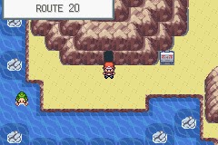
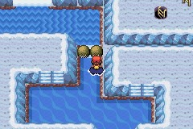
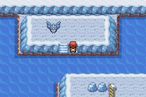
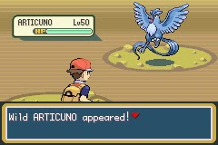
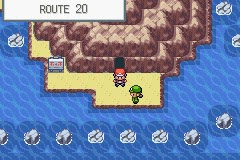

บทที่ 21 / 29
เกาะฝาแฝด<Seafoam Island>
❖
เราจะต้องใช้ท่าจากHM4มาช่วย ในการปิดทางแม่น้ำบางสาย ในนั้นยังมีฟรีซเซอร์<Articuno> เลเวล50 (ธาตุน้ำแข็ง/ปีก) ให้จับ ดันหินลงหลุมให้หมด เพื่อออกไปปากถ้ำอีกทาง เมื่อออกได้แล้ว ให้ไปทางตะวันตก เข้าเกาะกูเรนทาวน์




